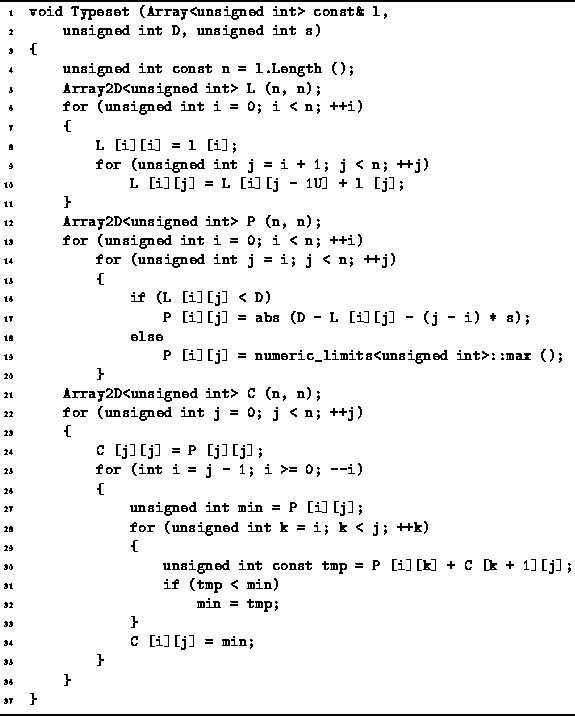

Data Structures and Algorithms
with Object-Oriented Design Patterns in C++
Data Structures and Algorithms
with Object-Oriented Design Patterns in C++
Program  defines the function Typeset
which takes three arguments.
The first, l, is an array of n unsigned integers that
gives the lengths of the words in the sequence to be typeset.
The second, D, specifies the desired paragraph width
and the third, s, specifies the normal inter-word space.
defines the function Typeset
which takes three arguments.
The first, l, is an array of n unsigned integers that
gives the lengths of the words in the sequence to be typeset.
The second, D, specifies the desired paragraph width
and the third, s, specifies the normal inter-word space.

Program: Dynamic Programming Example--Typesetting a Paragraph
The routine first computes the lengths,  ,
of all possible subsequences (lines 5-11).
This is done by using the dynamic programming paradigm
to evaluate the recursive definition of
,
of all possible subsequences (lines 5-11).
This is done by using the dynamic programming paradigm
to evaluate the recursive definition of  given in Equation .
The running time for this computation is clearly
given in Equation .
The running time for this computation is clearly  .
.
The next step computes the one-line penalties  as given by Equation (lines 12-20).
This calculation is a straightforward one
and its running time is also
as given by Equation (lines 12-20).
This calculation is a straightforward one
and its running time is also  .
.
Finally, the minimum total costs,  ,
of typesetting each subsequence are determined
for all possible subsequences (lines 21-26).
Again we make use of the dynamic programming paradigm
to evaluate the recursive definition of
,
of typesetting each subsequence are determined
for all possible subsequences (lines 21-26).
Again we make use of the dynamic programming paradigm
to evaluate the recursive definition of  given in Equation .
The running time for this computation is
given in Equation .
The running time for this computation is  .
As a result, the overall running time required to
determine the best way to typeset a paragraph of n words is
.
As a result, the overall running time required to
determine the best way to typeset a paragraph of n words is  .
.
 Copyright © 1997 by Bruno R. Preiss, P.Eng. All rights reserved.
Copyright © 1997 by Bruno R. Preiss, P.Eng. All rights reserved.